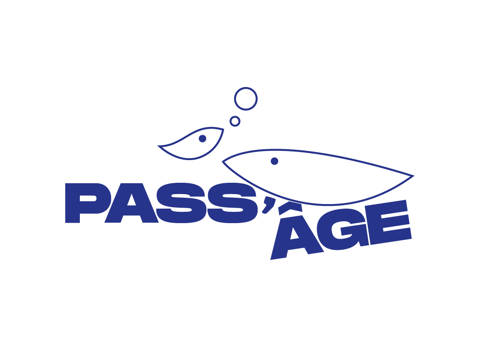

Création d'une identité visuelle pour une structure intergénérationnelle reliant personnes âgées et jeunes enfants, symbolisée par des animaux comme des oiseaux ou poissons. Les bulles représentent leur communication : la sagesse (droite) soutient l'innocence (gauche) pour favoriser l'apprentissage et l'épanouissement. Les lignes de force de la typographie accentuent la stabilité et la sécurité.
